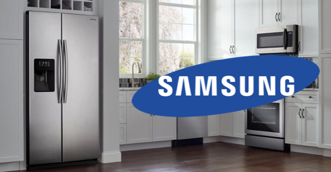
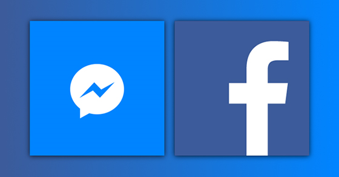
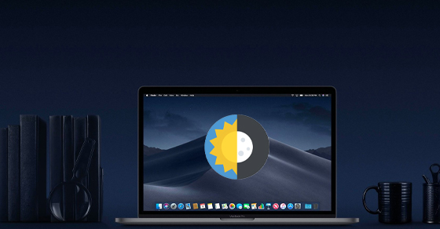

Calo (hay còn gọi calorie) là một đơn vị vật lý dùng để đo năng lượng. Việc biết được lượng calo nạp vào trong khẩu phần ăn sẽ giúp bạn kiểm soát được cân nặng như mong muốn. Hôm nay, mình sẽ giới thiệu cho các bạn cách tính calo ngay trên điện thoại bằng YAZIO, giúp bạn quản lý và theo dõi thực đơn hàng ngày cực đơn giản nhé!
IDE là cụm từ viết tắt của Integrated Development Environment, hay tạm dịch là môi trường phát triển tích hợp. Để dễ hiểu thì đây là phần mềm máy tính hỗ trợ các lập trình viên viết code, và chúng được tích hợp rất nhiều tính năng nhằm hỗ trợ việc viết code trở nên đơn giản hơn.
 Tủ lạnh side by side của Samsung là một trong những sản phẩm được nhiều gia đình tin dùng. Hãy cùng bài viết dưới đây tìm hiểu xem liệu tủ lạnh side by side của Samsung có tốt hay không, và chúng sẽ phù hợp với những gia đình nào nhé!
 Một đường link mở bằng trình duyệt ngoài có thể giúp bạn thực hiện được mọi tác vụ thay vì mở bằng Facebook, Messenger. Trong bài viết này, mình sẽ hướng dẫn các bạn cách cài đặt để mở link bằng trình duyệt ngoài từ Facebook, Messenger.
 Cũng giống như chế độ nền tối (Dark Mode) trên điện thoại, khi kích hoạt Dark Mode trên MacBook, giao diện máy sẽ chuyển sang màu tối. Nhờ bật Dark Mode, bạn vừa có thể tiết kiệm thời lượng pin của thiết bị, mà cơ thể còn cảm thấy dễ chịu hơn khi làm việc trong môi trường thiếu sáng.
Banner có thể hiểu là một bảng biểu để quảng cáo thương hiệu mà bạn muốn nói đến. Nói cách khác, banner là ấn phẩm để quảng cáo cho các dịch vụ, các sản phẩm.Khi những banner này được khách hàng nhìn thấy nhiều lần, họ sẽ nhớ đến các sản phẩm, dịch vụ của bạn. Từ đó nhận thức về thương hiệu sẽ ngày một được gia tăng.
JavaScript là 1 trong 3 ngôn ngữ chính của lập trình web, và nó được dùng phổ biến trong suốt 20 năm qua. Từ thuở sơ khai, nó còn có tên là Mocha (năm 1995), sau đó được đổi thành Mona, Livescript, và cuối cùng là JavaScript như hiện nay.
Nhiều bạn muốn thay thế một núm đệm tai nghe mới cho chiếc tai nghe AirPods Pro của mình nhưng lại lay hoay không biết cách gỡ. Vậy thì đừng lo, bài viết này sẽ hướng dẫn bạn cách gỡ, thay thế núm đệm tai nghe AirPods Pro cực đơn giản.